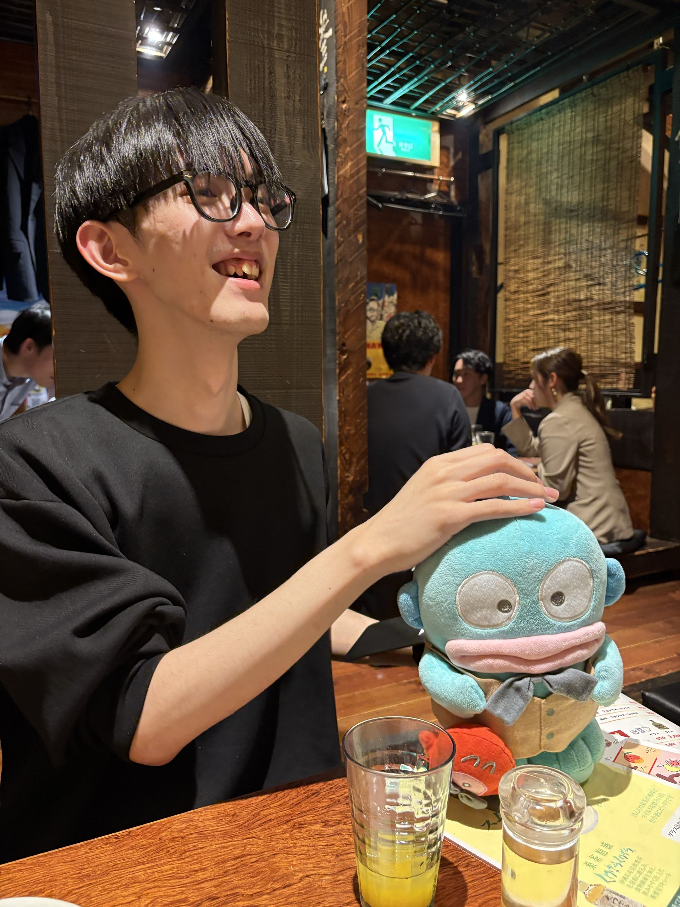

Game Systems & Engine Programmer Portfolio
(ここにキャッチフレーズ)

個人でゲームエンジンを開発する際は、前作でつまずいた経験を次の設計に活かすことを大切にしています。前作を終了するたびに開発ツールがメモリリークを検出していたことを反省し、後継のエンジンでは「スマートポインタ」と呼ばれる、使われなくなったデータを仕組み側が自動的に片付けてくれる管理方法に設計から見直しました。
技術を学ぶときは「車輪の再発明」を大切にし、既存の技術も自分の手を動かして再現しながら理解を深めています。一方で、時間や難易度の都合で自力実装が難しいものは、既存のライブラリやフレームワークも仕組みを理解した上で活用します。
触ったことのない機能や複雑な処理にも、まずは手を動かして試してから考えるタイプです。うまくいかない日があっても、粘り強く向き合いながら少しずつ前に進めることを心がけています。
HAL東京 専門課程4年制
ゲーム4年制学科 ゲーム制作コース
2002年7月31日生
ゲームシステムからエンジンまで、プログラマーとして幅広く志望しております！